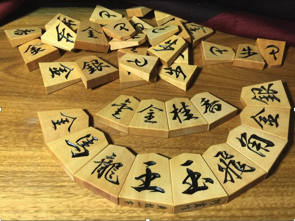
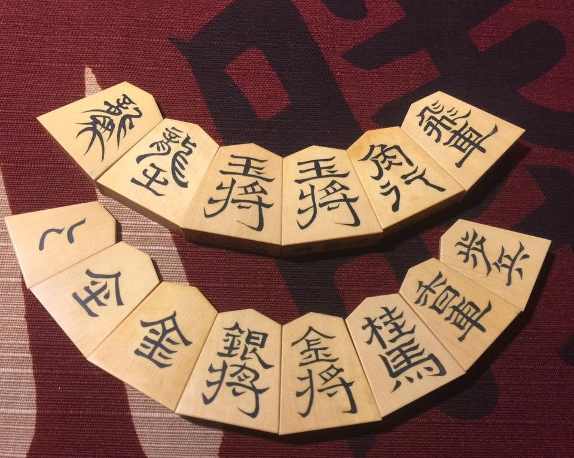
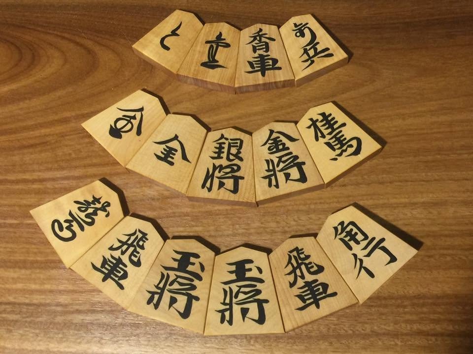
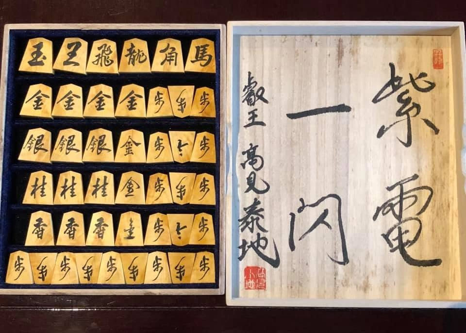
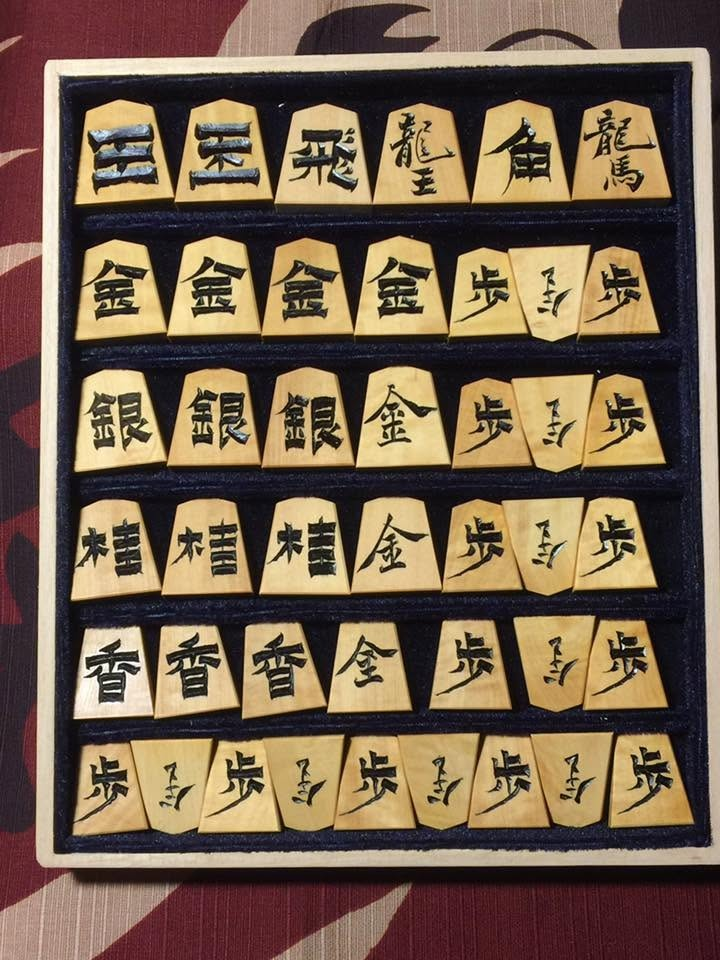

SHOGI · CALLIGRAPHY · CRAFT
Enjoy the lettering.
Savour every move.
Character by character. Piece by piece.
Handcrafted shogi pieces by Cheng-Huang Lin.
It all began with a love of the game.
The grain of wood, the form of a character, and the feeling of a piece in the hand: these small objects offer the pleasures of both play and contemplation.
My father taught me Chinese chess as a child. I learned shogi while studying at Kyushu University in Japan. After returning to Taiwan, I continued to make connections through the game and began learning piece making from a visiting craftsman in 2012.
Wanting to create pieces with my own lettering led me to study calligraphy. I also adapt my tools and refine my methods. Making shogi pieces brings together my love of the game and the joy of working by hand.
Ten works, individual expressions.

RyōkoExplore the collection ↗

ShokkōExplore the collection ↗

GyoryūExplore the collection ↗

Gyoryū · Single CharacterExplore the collection ↗

EihōExplore the collection ↗

KiyosadaExplore the collection ↗

Wang DuoExplore the collection ↗

Slender GoldExplore the collection ↗

Longmen Four InscriptionsExplore the collection ↗

Jin NongExplore the collection ↗
THE MAKER
The maker — Cheng-Huang Lin
PhD in Engineering, Kyushu University · Professor Emeritus, National Taiwan Normal University
Cheng-Huang (Alex) Lin has taught and researched chemistry and fine arts. He studied shogi piece making under Fugetsu (富月) and calligraphy under Lin Long-Da (林隆達).
His work explores materials, hands-on craft, and the balance between expressive calligraphy and readability in play. He also prepares lettering templates adapted to the pentagonal pieces.
Maker inscriptions vary by period and work. This website presents the collection under his name, Cheng-Huang Lin.
Read the feature on making shogi pieces (47NEWS) ↗